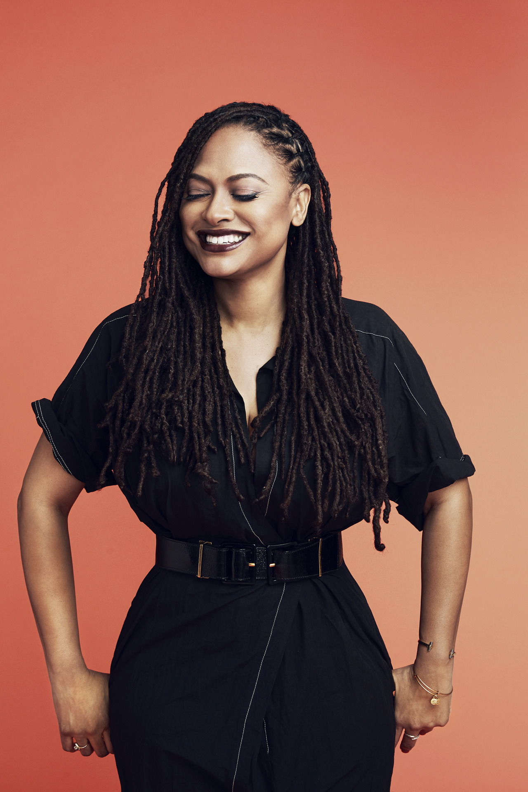
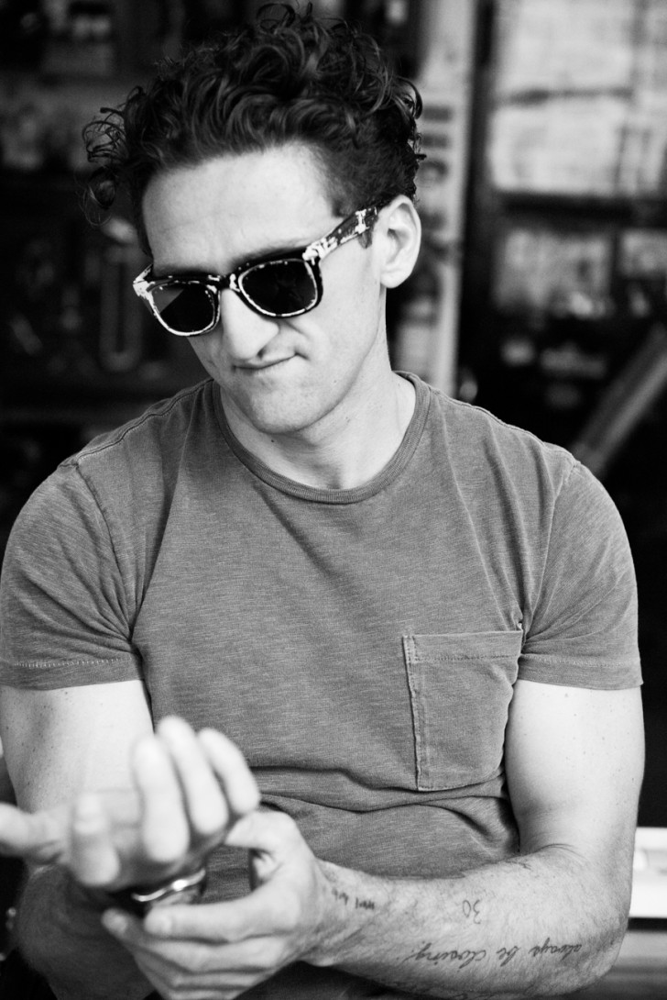

Ava DuVernay is a writer, producer, director and distributor of independent film. Some of her works include, Selma, 13th, When They See Us, and a Wrinkle in Time.
She is an inspiration because she is the first black woman to win the directing award at the Sundance Film Festival, among other awards. She tells the stories that
need to be told and focuses on the details that matter even if they are hard to see. "

"Casey Neistat is an American YouTube personality, filmmaker, vlogger and co-founder of the multimedia company Beme, which was later acquired by CNN. In 2018, he founded 368, a creative space for creators to collaborate and influence each other."